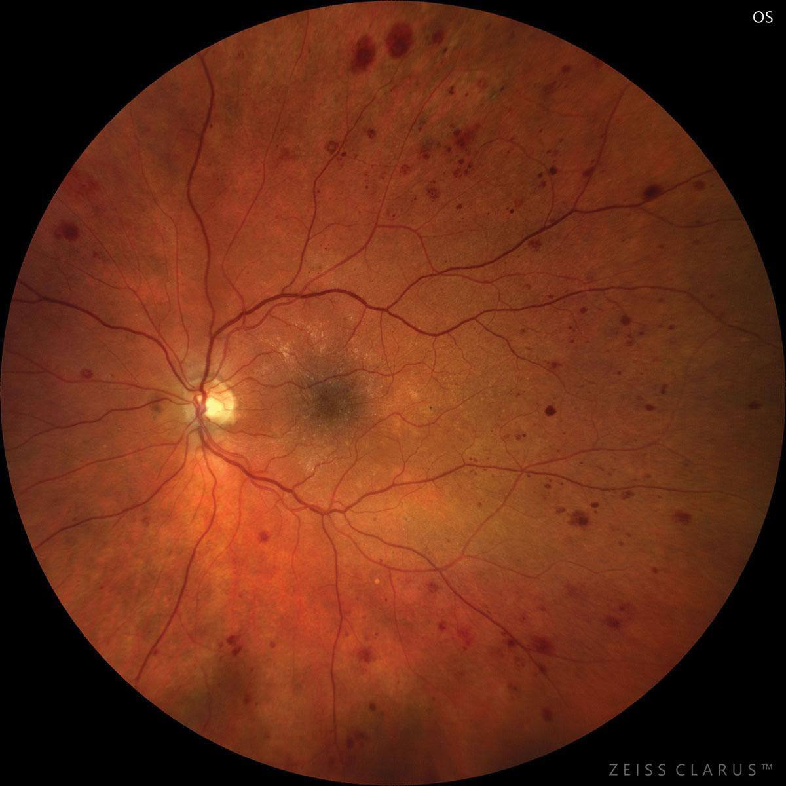
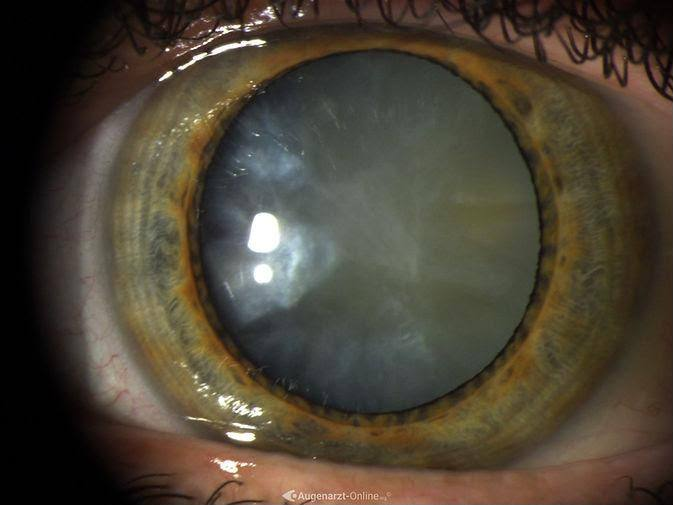
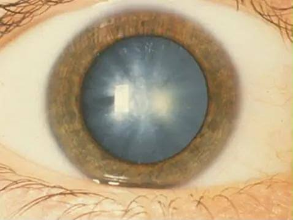
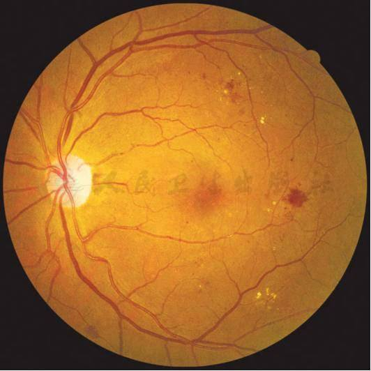

Диабеттік ретинопатия — көздің торлы қабығындағы қан тамырларының зақымдануы.
Толық бетіне өту →
DIABETES & VISION
Қант диабетінің көзге әсері
және одан туындайтын көз аурулары
Қант диабеті көздің әртүрлі құрылымдарына әсер етіп, көру қабілетінің бұзылуына және ауыр асқынуларға әкелуі мүмкін.

Диабеттік ретинопатия
Катаракта
Глаукома
Диабеттік макулопатия01 · Кіріспе
Көз — қант диабетінің алғашқы «мақсаты»
Жоғары қандағы қант (гипергликемия) көздің жіңішке тамырлары мен жүйке жасушаларын ұзақ уақыт бойы біртіндеп зақымдайды. Ең қауіптісі — торлы қабық (ретина): оның өзгерістері алдымен нейрофизиологиялық деңгейде басталады, содан кейін ғана көзге көрінетін белгілер пайда болады.
Сол себептен әлемде диабеттік ретинопатия еңбекке жарамды жастағы адамдар арасында соқырлықтың негізгі себебі саналады.
537 млн+әлемде қант диабетімен өмір сүреді (IDF, 2021)
~⅓науқастарда көз патологиясы белгілері байқалады
№ 1жастар мен орта жастағылар арасындағы соқырлық себебі
Қант диабетімен байланысты
6 негізгі көз ауруы
👆 Карточканы басып толық мәліметті ашыңыз
Катаракта — көз бұршағының бұлыңғырлануы, көру қабілетінің төмендеуі.
Толық бетіне өту →Глаукома — көру жүйкесінің зақымдануы, көбіне көз ішілік қысымның жоғарылауымен байланысты.
Толық бетіне өту →Диабеттік макулопатия — торлы қабықтың орталық бөлігі — макуланың зақымдануы.
Толық бетіне өту →Шыны тәрізді денеге қан құйылу (гемофтальм) — зақымданған қан тамырларынан көздің шыны тәрізді денесіне қан кетуі.
Толық бетіне өту →Тракциялық торлы қабық ажырауы (тракциялық отслойка сетчатки) — диабеттік ретинопатияның асқынуы нәтижесінде торлы қабықтың өз орнынан тартылып ажырауы.
Толық бетіне өту →03 · Негіздер
Торлы қабықтың нейрофизиологиясы
Ретина — мидың шығып тұрған бөлігі іспеттес жүйке тіні. Диабет оның қызметін жасуша деңгейінде бұзады:
👁️ Фоторецепторлар
Таяқшалар (rods) — қараңғыға бейімделу, колбалар (cones) — түс пен өткір көру. Гипоксия олардың метаболизмін алғаш бұзады.
🧠 Ганглиозды жасушалар
Нейродегенерацияға ең сезімтал буын: нерв талшықтары қабаты (RNFL) жұқарады, жасушалар апоптозға ұшырайды.
⚡ Электроретинография (ЭРГ)
a-толқын — фоторецепторлар, b-толқын — ішкі қабат жасушалары. Осцилляторлық потенциалдардың төмендеуі — ерте белгі: тамырлар көрінбей тұрып-ақ электр жауабы өзгереді.
🩸 Қан-торлы тосқауыл
Эндотелий мен пигмент эпителийінің тығыз байланысы. Гипергликемия оның өткізгіштігін арттырып, макулярлық ісінуге және қатты экссудаттарға алып келеді.
04 · Қатарлас байланыс
Бүйрек аурулары және көз
🔗 «Бүйрек—көз» осі
Екі мүше де микроциркуляцияға тәуелді: гипергликемия мен гипертензия оларды бірдей зақымдайды. Бірінің ауырлығы екіншісінің болжамы болады.
🧪 Диабеттік нефропатия
Альбуминурия мен eGFR төмендеуі. Ауыр ретинопатия — бүйрек зақымдануының тәуелсіз болжам көрсеткіші (предикторы).
💧 СБА (CKD) мен уремия
Токсиндер, қысым және ісіну көз түбінде гипертензиялық және уремиялық ретинопатияға ұқсас өзгерістер тудырады; гемодиализ кезінде көру ауытқуы мүмкін.
05 · Жасанды интеллект
Көз өзгерістерін ЖИ негізінде визуалды талдау
Көз түбінің (фундус) қарапайым фотосуретін модель бір мезетте талдап, патологияның ықтималдығын санмен көрсетеді:
- 1
Деректер жинау
Фундус фотосуреттері, OCT, eGFR және HbA1c көрсеткіштері.
- 2
Алдын ала өңдеу
Сурет сапасын бақылау, қалыпқа келтіру, augmentation.
- 3
Оқыту (CNN)
ResNet, Inception, EfficientNet — жіктеу; UNet — сегментация; трансфер-оқыту.
- 4
Жіктеу және болжам
Ретинопатия кезеңі, макулярлық ісіну; зерттеулерде — фундус суретінен бүйрек қызметін болжау.
- 5
Түсіндіру
Grad-CAM жылу карталары «не көргенін» көрсетеді; соңғы шешім — дәрігерге тиесілі.
Деректер жиындары мен метрикалар
EyePACS, APTOS 2019, Messidor-2, IDRiD базаларында оқытылған модельдер ажыратуда жиі AUC > 0.90 көрсетеді.
06 · Қорытынды
Басты тұжырымдар
- Электрлік жауап — алғашқы сигнал: ЭРГ пен OCT өзгерістері көзге көрінетін тамырлық белгілерден бұрын анықталады.
- Көз — жалпы денсаулықтың «терезесі»: ретина тамырлары бүйрек микроциркуляциясымен байланысты.
- ЖИ — дәрігердің көмекшісі: фундус суретін жылдам талдап, ерте скринингке қолжетімділік береді.
- Профилактика — бәрінен бұрын: гликемияны бақылау, қысым мен липидтерді қалыпта ұстау, жылына бір рет көз дәрігерін тексеру.
Нақтырақ білгіңіз келе ме? Жобаның ЖИ-көмекшісі сұрақтарыңызға жауап береді.